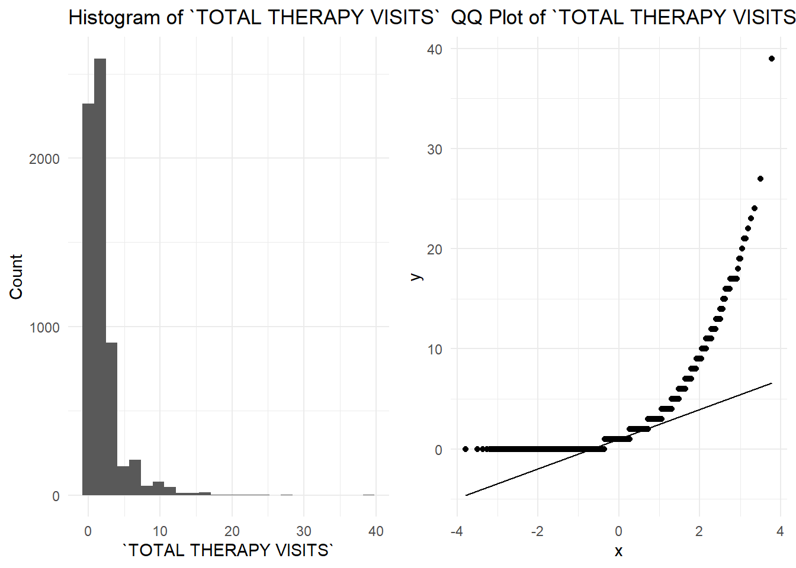
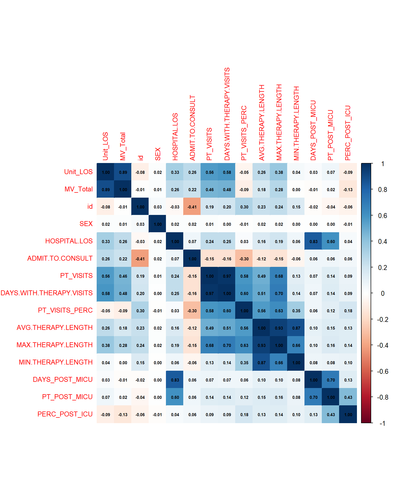
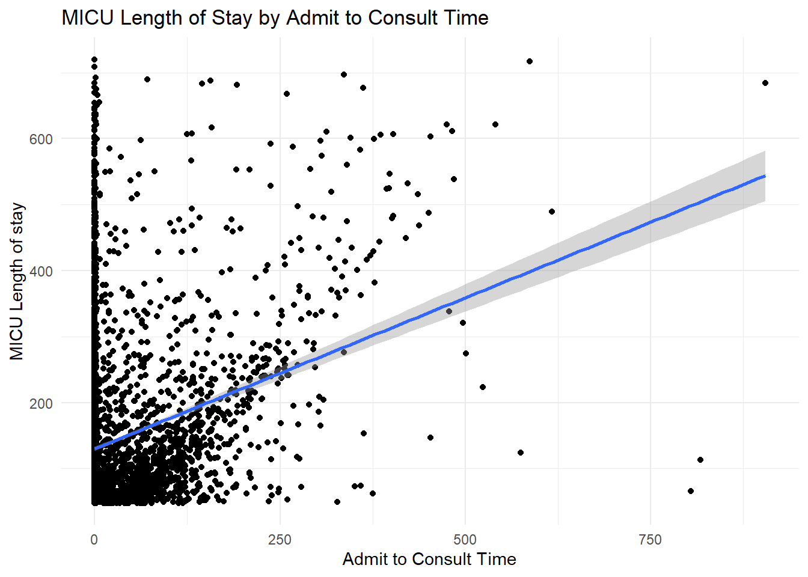

library(dplyr)
library(ggplot2)
library(tidyverse)
library(naniar) # Used to visualize missing data
library(kableExtra) # Used for pretty printing (kable_styling)
library(table1) # Used to make Table 1
library(gridExtra) # Used to plot ggplots side by side
library(bestNormalize) # Used to find best transformation for a variableData Checking - Statistical Consulting
Introduction
This is the Quarto markdown for the live consultation in BIOS 6621: Statistical Consulting.
This is a research project encompassing the entire data analysis pipeline, from initial consultation to scope of work writing, execution of statistical analysis, and completion of project deliverables.
Scope of Work (SOW) Agreement
General Information
| Investigator | Megan Watson | Date | September 30, 2024 |
| Project Title | Quality Improvement into Standard Practice: Persistent Practice Changes and Decreased Length of Stay for 3 years following a Medical ICU Physical Therapy Quality Improvement Project |
Project Description
Background
The objective of this study is to assess the impact of a MICU physical therapy (PT) quality improvement (QI) project on physical therapist practice, and quantify the changes in length of stay (LOS) and mechanical ventilation (MV) time. The goals of the QI Initiative were to increase percentage of MICU admissions receiving PT, decrease time from MICU admission to first PT, and increase the frequency of PT visits. The main question the researcher came to us with was: how to correctly model the longitudinal data in the study?
Study Design
This was a retrospective cohort study, comparing 3 main time periods: Pre-QI Initiative (before April 2015), During QI Initiative (April 2015-Dec 2015), and After-QI Initiative (Jan 2016 and later). The QI initiative was deployed during the 9-month period between April 2015 and December 2015, during which time there were education and staffing changes. Patients were stratified as either having mechanical ventilation or not having mechanical ventilation. The primary outcomes of interest were MICU LOS and time on MV. Secondary outcomes of interest were the non-ICU LOS, total hospital LOS, and discharge location.
Description of the Data
Data was received as a de-identified .csv. Data points consist of: Admit and Discharge Time, PT Consult Time, Admit to Consult Time, First Therapy Time, Consult to Therapy Time, Admit to Therapy Time, Total Therapy Visits, Days with Therapy Visits, Average, min, and Max Therapy Length, Admit and Discharge Date/Time, Total MV Days, Hospital LOS, Patient Age, Sex, “Problem List”, and Codes (presumably ICD9/10).
Anticipated Sample Size / Study Population
The sample size is N = ~3000-4000, consisting of patients admitted to the MICU with a LOS between 2 and 30 days (I.e. exclude < 2 days or > 30 days). This was a single site study performed here at Colorado University.
Hypothesis
The hypothesis for the study was that LOS and time on MV would decrease when comparing the pre- and intra-initiative time periods, and when comparing the pre- and post-initiative time periods. Clinical significance for this outcome is considered as a 1-2 day change in LOS. The intended end product of this project is a publication in a PT journal.
Analysis Plan (Sketch)
Data should first be examined for missingness, as this has not been performed. Similarly, repeat MICU admissions should be explored and controlled for to ensure independence of observations. Death during MICU stay should also be examined and adjusted for if needed. The analysis plan discussed was to utilize splines to capture the trajectory of LOS or time on MV over time by fitting smooth curves to the data. Linear contrasts should be performed to assess if there is a significant difference in LOS or time on MV when comparing two timepoints (i.e. pre- and intra-, pre- and post- , and post- and intra-QI Initiative. Supplementary analyses should be performed to assess secondary outcomes of interest of non-ICU LOS and total hospital LOS.
Project Deliverables
At this stage, Megan has only asked for insight into what method to use to account for variance in time for her analysis. There are currently no other deliverables.
Timeline / Deadlines
At this time, Megan has not asked for data analysis efforts from us.
Should this change, the anticipated project start date will be 1 week after our next meeting with her, where revisions to the Comprehensive Analysis Report are also expected to be completed. The assigned analysts will reach out to the investigator to confirm the project timeframe and the project start date may be altered if necessary. 2 weeks will be allowed for initial data analysis by the assigned analyst.
A follow-up meeting is to occur no later than 1 month after the next meeting with Megan. During the follow-up meeting, the project team will discuss and preliminary results of the analysis, mockup the desired tables and figures (1-2 descriptive tables, 1-2 analysis results tables and up to 4 graphs), and discuss next steps. During the follow-up meeting, the team will establish a meeting schedule for the remainder of the project.
Estimated Cost
This represents our best estimate of the effort needed to complete the project. Should the scope of work change substantially, the analyst(s) will discuss changes with the investigator and issue a new or amended project agreement.
| Effort | |||
| Months | PhD Faculty | Master’s Faculty | Student |
| 1 | 20% | 0% | 80% |
| Total Costs | ’Bout Tree Fiddy |
Data Preparation
Let’s begin by loading our libraries
Import the data set.
data <- read_csv("C:/Users/sviea/Documents/Statistical Consulting/Vieau_Project_01/Data Raw/MICUPT_Deidentify.csv")New names:
Rows: 13109 Columns: 25
── Column specification
──────────────────────────────────────────────────────── Delimiter: "," chr
(9): SEX, PROBLEM LIST DX CODES, PROBLEM LIST DX NAMES, DISCH_DISP, DEP... dbl
(16): ...1, MV_Total, HOSPITAL LOS, ADMIT TO CONSULT, CONSULT TO TREAT, ...
ℹ Use `spec()` to retrieve the full column specification for this data. ℹ
Specify the column types or set `show_col_types = FALSE` to quiet this message.
• `` -> `...1`names(data)[1] <- "id" # Rename the wonky id columnAnd take a look at our data.
glimpse(data)Rows: 13,109
Columns: 25
$ id <dbl> 1, 2, 3, 4, 5, 6, 7, 8, 9, 10, 1…
$ SEX <chr> "M", "F", "F", "F", "F", "F", "M…
$ MV_Total <dbl> 30, NA, 13, NA, 16, NA, NA, NA, …
$ `HOSPITAL LOS` <dbl> 1827, 767, 610, 839, 1109, 549, …
$ `PROBLEM LIST DX CODES` <chr> "291.81, 305.00, 311, 4", "287.5…
$ `PROBLEM LIST DX NAMES` <chr> "AKI (acute kidney injury) (HC c…
$ DISCH_DISP <chr> "Skilled Nursing Facility", "Hom…
$ `DEPT BEFORE Unit` <chr> "PRE-ADMISSION", "PRE-ADMISSION"…
$ `DEPT AFTER Unit` <chr> "CARDIOLOGY UNIT", "AMC PULM UNI…
$ `ADMIT TO CONSULT` <dbl> 576, 451, 313, 403, 386, 17, NA,…
$ `CONSULT TO TREAT` <dbl> 97, NA, 97, 28, 19, NA, NA, NA, …
$ `ADMIT TO TREAT` <dbl> 673, NA, 410, 431, 405, NA, NA, …
$ `TOTAL THERAPY VISITS` <dbl> 8, 0, 2, 2, 4, 0, 0, 0, 0, 0, 2,…
$ Unit_LOS <dbl> 1394, 487, 610, 483, 606, 25, 39…
$ `DAYS WITH THERAPY VISITS` <dbl> 8, 0, 2, 2, 4, 0, 0, 0, 0, 0, 2,…
$ `PERCENT OF DAYS WITH THERAPY VISITS` <dbl> 13.79, 0.00, 8.00, 10.00, 16.00,…
$ `AVG THERAPY LENGTH` <dbl> 22, 0, 27, 17, 25, 0, 0, 0, 0, 0…
$ `MAX THERAPY LENGTH` <dbl> 30, 0, 30, 20, 30, 0, 0, 0, 0, 0…
$ `MIN THERAPY LENGTH` <dbl> 15, 0, 25, 15, 20, 0, 0, 0, 0, 0…
$ `ACTUAL DAYS POST MICU` <dbl> 18, 12, 0, 15, 17, 4, 0, 8, 2, 5…
$ `PT or OT VISIT DAYS POST MICU` <dbl> 5, 3, 0, 1, 9, 0, 0, 3, 0, 3, 2,…
$ `PERCENT POST ICU DAYS THERAPY` <dbl> 27.78, 25.00, 0.00, 6.67, 52.94,…
$ Age_Range <chr> "60-69", "40-49", "40-49", "18-3…
$ Admit_MonthYear <chr> "2011-08", "2011-08", "2011-08",…
$ Age_Quartile <chr> "57-66", "43-56", "43-56", "14-4…It looks like everything is formatted correctly for the most part.
Percents are coded as doubles.
Admit_MonthYear is a string (e.g. “2011-08”) that we may have to process in order to create variables for the 3 main time periods: Pre-QI Initiative (before April 2015), During QI Initiative (April 2015-Dec 2015), and After-QI Initiative (Jan 2016 and later).
Let’s take a look at our data for good measure.
# Pretty print header of wideform data
kable(head(data), format = "html", full_width = TRUE) %>%
kable_styling(bootstrap_options = c("striped", "hover", "condensed"))| id | SEX | MV_Total | HOSPITAL LOS | PROBLEM LIST DX CODES | PROBLEM LIST DX NAMES | DISCH_DISP | DEPT BEFORE Unit | DEPT AFTER Unit | ADMIT TO CONSULT | CONSULT TO TREAT | ADMIT TO TREAT | TOTAL THERAPY VISITS | Unit_LOS | DAYS WITH THERAPY VISITS | PERCENT OF DAYS WITH THERAPY VISITS | AVG THERAPY LENGTH | MAX THERAPY LENGTH | MIN THERAPY LENGTH | ACTUAL DAYS POST MICU | PT or OT VISIT DAYS POST MICU | PERCENT POST ICU DAYS THERAPY | Age_Range | Admit_MonthYear | Age_Quartile |
|---|---|---|---|---|---|---|---|---|---|---|---|---|---|---|---|---|---|---|---|---|---|---|---|---|
| 1 | M | 30 | 1827 | 291.81, 305.00, 311, 4 | AKI (acute kidney injury) (HC c | Skilled Nursing Facility | PRE-ADMISSION | CARDIOLOGY UNIT | 576 | 97 | 673 | 8 | 1394 | 8 | 13.79 | 22 | 30 | 15 | 18 | 5 | 27.78 | 60-69 | 2011-08 | 57-66 |
| 2 | F | NA | 767 | 287.5, 416.8, 584.9, 5 | Acute renal failure (HC code), | Home-Health Care Svc | PRE-ADMISSION | AMC PULM UNIT | 451 | NA | NA | 0 | 487 | 0 | 0.00 | 0 | 0 | 0 | 12 | 3 | 25.00 | 40-49 | 2011-08 | 43-56 |
| 3 | F | 13 | 610 | 078.5, 284.1, 288.4, 5 | CMV (cytomegalovirus infectio | Expired | PRE-ADMISSION | POST-DISCHARGE | 313 | 97 | 410 | 2 | 610 | 2 | 8.00 | 27 | 30 | 25 | 0 | 0 | 0.00 | 40-49 | 2011-08 | 43-56 |
| 4 | F | NA | 839 | NA | NA | Long Term Care | PRE-ADMISSION | CARDIOLOGY UNIT | 403 | 28 | 431 | 2 | 483 | 2 | 10.00 | 17 | 20 | 15 | 15 | 1 | 6.67 | 18-39 | 2011-08 | 14-42 |
| 5 | F | 16 | 1109 | 250.00, 250.60, 356.9 | Cellulitis, Diabetes mellitus (H | Skilled Nursing Facility | OLD AMC CARD ICU | CARDIOLOGY UNIT | 386 | 19 | 405 | 4 | 606 | 4 | 16.00 | 25 | 30 | 20 | 17 | 9 | 52.94 | 40-49 | 2011-08 | 43-56 |
| 6 | F | NA | 549 | 041.04, 244.9, 288.60 | AKI (acute kidney injury) (HC c | Hospice/Medical Facility | AMC MED SPEC UNIT | CARDIOLOGY UNIT | 17 | NA | NA | 0 | 25 | 0 | 0.00 | 0 | 0 | 0 | 4 | 0 | 0.00 | 40-49 | 2011-08 | 14-42 |
Looks good.
Missingness
gg_miss_var(data)
We are missing the most data in MV_Total , followed by CONSULT TO TREAT, ADMIT TO TREAT, and PROBLEM LIST DX CODES. Missingness does not seem to be an issue for the rest of the variables.
vis_miss(data)
Immediately concerning is the 65% missing data on MV_TOTAL, the variable for total time on mechanical ventilation, which happens to me a main outcome of interest.
CONSULT TO TREAT has 56% missing and ADMIT TO TREAT has 55% missing. This could be because, in emergency situations where immediate critical care is required, patients might be directly admitted to the MICU without a formal consult.
PROBLEM LIST DX CODES and PROBLEM LIST DX NAME have 25% and 20% missing, respectively. Odd that their missingness doesn’t align exactly. This isn’t actually too bad, and our sample size is large enough that we may still be able to include these variables in our analysis if we wanted to. We’d just have to do some processing to place patients into large enough overarching diagnosis categories that we’d have enough patients in each group. Not the researcher’s primary research question however so not looking any further into it. We’d also have to examine missingness and see if there are and patterns or it’s MCAR.
Summary
Based on the initial missingness checks, we will exclude variables with excessive missingness.
These variables will be retained for reporting in Table 1 for the researcher, but will be excluded from consideration in the analysis.
Consult to TreatandAdmit to Treatare missing >= 55% of values, and will thus be excluded from analysis.Problem List DX Codesis missing 25% andProblem List DX Namesis missing 20% of values. Additionally, it would be challenging to include these variables in the analysis in a meaningful way due to sample size limitations, so these will be excluded from consideration in the final analysis.Admit to Consultis missing 23% of values.
All other variables were missing < 1% and thus missingness does not need to be addressed for these variables.
Data Quality Check
Let’s perform some simple min/max checks to assess if data has been entered correctly.
# This function summarizes the mins and maxes of numeric variables
summarize_column <- function(column) {
if (is.numeric(column)) {
return(data.frame(
Type = "Numeric",
Min = min(column, na.rm = TRUE),
Max = max(column, na.rm = TRUE)
))
}
}
# Apply the function to each column and bind the results into a single data frame
summary_df <- map_dfr(data, summarize_column, .id = "Column") %>%
mutate(across(everything(), ~ format(., scientific = FALSE))) # Eliminates scientific notation
# Pretty print the mins and maxes of longform data_2
kable(summary_df, format = "html") %>%
kable_styling(bootstrap_options = c("striped", "hover", "condensed"))| Column | Type | Min | Max |
|---|---|---|---|
| id | Numeric | 1 | 13109 |
| MV_Total | Numeric | 1 | 75 |
| HOSPITAL LOS | Numeric | 4 | 9270 |
| ADMIT TO CONSULT | Numeric | 0 | 1172 |
| CONSULT TO TREAT | Numeric | -405 | 3046 |
| ADMIT TO TREAT | Numeric | -1 | 983 |
| TOTAL THERAPY VISITS | Numeric | 0 | 69 |
| Unit_LOS | Numeric | 1 | 1811 |
| DAYS WITH THERAPY VISITS | Numeric | 0 | 33 |
| PERCENT OF DAYS WITH THERAPY VISITS | Numeric | 0 | 100 |
| AVG THERAPY LENGTH | Numeric | -1970 | 2144 |
| MAX THERAPY LENGTH | Numeric | -85 | 4744 |
| MIN THERAPY LENGTH | Numeric | -6841 | 1253 |
| ACTUAL DAYS POST MICU | Numeric | 0 | 383 |
| PT or OT VISIT DAYS POST MICU | Numeric | 0 | 68 |
| PERCENT POST ICU DAYS THERAPY | Numeric | 0 | 100 |
HOSPITAL LOS has a range of 4 to 9270. Presumably this is in hours, so a range of 0.01 to 386.25 days in the hospital. I believe the variable we are actually interested in for MICU LOS is UNIT LOS however, so a range of 1 to1811 hours, or 0.41 to 75.46 days. (Just realized none of us asked for a data dictionary even though it was a room of ~20 stats master‚Äôs students üòÖ).
The researcher outlined the exclusion criteria of < 2 days or > 30 days in the MICU for her investigation. It looks like we will have to filter the data set to match these criteria.
CONSULT TO TREAT has a range of -405 to 3056. ADMIT TO TREAT has a range of -1 to 983. I think these variables are the time from consultation or admission until the time treatment for that patient began. Again, without a data dictionary I am unsure what to make of those negative values.
Importantly, AVG, MAX, and MIN THERAPY LENGTH all have negative values for the minimums. This doesn’t make any sense at face value, will have to investigate and circle back to the researchers for how this data was coded.
Some variables like MV_Total are in hours, and some like DAYS WITH THERAPY VISITS are in days. I don’t think we need to run any conversions, but this will be important to at least keep track of for interpretations.
Aside from that everything else looks coded properly.
Filter Data Set
Let’s go ahead and filter the data set according to the experimenter’s exclusion criteria of < 2 days or > 30 days in the MICU so we are not unnecessarily investigating superfluous data in our continued examinations.
# Filter data set based on researcher's exclusion criteria
data_ex <- data[data$Unit_LOS >= 48 & data$Unit_LOS <= 720,]
# Check dimensions
dim(data_ex)[1] 6430 25We now have a dataset of 6430 patients!
Univariate Distributions
Here we will explore the univariate distributions of our variables to assess data quality using histograms and qqplots.
Outcome Variables
First we will begin with mechanical ventilation time (MV)
# Create histogram and qqplot
distr_plots(data_ex, "MV_Total")Warning: `aes_string()` was deprecated in ggplot2 3.0.0.
ℹ Please use tidy evaluation idioms with `aes()`.
ℹ See also `vignette("ggplot2-in-packages")` for more information.Warning: Removed 3166 rows containing non-finite outside the scale range
(`stat_bin()`).Warning: Removed 3166 rows containing non-finite outside the scale range
(`stat_qq()`).Warning: Removed 3166 rows containing non-finite outside the scale range
(`stat_qq_line()`).That’s some severe right skewness! Is that logarithmic? Let’s try and transform and see what happens.
# Perform a log transform of mechanical ventilation time and plot
data_ex$MV_Total_log <- log(data_ex$MV_Total)
# Create histogram and qqplot
distr_plots(data_ex, "MV_Total_log", 10)Warning: Removed 3166 rows containing non-finite outside the scale range
(`stat_bin()`).Warning: Removed 3166 rows containing non-finite outside the scale range
(`stat_qq()`).Warning: Removed 3166 rows containing non-finite outside the scale range
(`stat_qq_line()`).
That’s better. Maybe try a square root transformation?
# Perform a sqrt transformation and plot
data_ex$MV_Total_sqrt <- sqrt(data_ex$MV_Total)
# Create histogram and qqplot
distr_plots(data_ex, "MV_Total_sqrt", 10)Warning: Removed 3166 rows containing non-finite outside the scale range
(`stat_bin()`).Warning: Removed 3166 rows containing non-finite outside the scale range
(`stat_qq()`).Warning: Removed 3166 rows containing non-finite outside the scale range
(`stat_qq_line()`).
That looks worse. Out of curiosity I’m going to try using the bestNormalize package I’ve been learning to see if it can recommend the best tranformation.
BNobject <- bestNormalize(data_ex$MV_Total)Warning: `progress_estimated()` was deprecated in dplyr 1.0.0.
ℹ The deprecated feature was likely used in the bestNormalize package.
Please report the issue to the authors.BNobjectBest Normalizing transformation with 3264 Observations
Estimated Normality Statistics (Pearson P / df, lower => more normal):
- arcsinh(x): 24.4737
- Box-Cox: 24.668
- Center+scale: 23.9788
- Double Reversed Log_b(x+a): 27.3302
- Exp(x): 344.996
- Log_b(x+a): 24.4343
- orderNorm (ORQ): 24.2547
- sqrt(x + a): 24.3006
- Yeo-Johnson: 24.7569
Estimation method: Out-of-sample via CV with 10 folds and 5 repeats
Based off these, bestNormalize chose:
center_scale(x) Transformation with 3264 nonmissing obs.
Estimated statistics:
- mean (before standardization) = 6.102022
- sd (before standardization) = 5.111536 The short explanation of how these values work is that the value closest to 1 is the best transformation, but these are all VERY far from one. So that didn’t help.
Boxplot
#Create boxplot to assess for outliers
ggplot(data_ex, aes(y = MV_Total_log)) +
geom_boxplot() +
labs(title = "Boxplot of MV Total Log",
y = "MV Total Log")Warning: Removed 3166 rows containing non-finite outside the scale range
(`stat_boxplot()`).
There are also no outliers for MV_Total_Log!
Summary
It looks like the best option we have is a log transformation of MV TOTAL.
Alternatively, we will likely end up running a Poisson or Negative Binomial regression to handle this data.
# Create histogram and qqplot
distr_plots(data_ex, "Unit_LOS", 10)That’s super skewed as well! Let’s try a log transform.
# Perform log transform of MICU LOS
data_ex$Unit_LOS_log <- log(data_ex$Unit_LOS)
# Create histogram and qqplot
distr_plots(data_ex, "Unit_LOS_log", 10)
We’ve got more of an S shape going there. I wonder if a BoxCox transformation is more appropriate?
library(bestNormalize)
# Use bestNormalize to try to find best transformation
BNobject <- bestNormalize(data_ex$Unit_LOS)BNobjectBest Normalizing transformation with 6430 Observations
Estimated Normality Statistics (Pearson P / df, lower => more normal):
- arcsinh(x): 8.8799
- Box-Cox: 5.7117
- Center+scale: 33.7306
- Double Reversed Log_b(x+a): 57.1238
- Log_b(x+a): 8.8956
- orderNorm (ORQ): 1.3094
- sqrt(x + a): 19.7458
- Yeo-Johnson: 5.7313
Estimation method: Out-of-sample via CV with 10 folds and 5 repeats
Based off these, bestNormalize chose:
orderNorm Transformation with 6430 nonmissing obs and ties
- 515 unique values
- Original quantiles:
0% 25% 50% 75% 100%
48.00 66.00 95.00 166.75 720.00 # Perform boxcox transformation
data_ex$Unit_LOS_boxcox <- boxcox(data_ex$Unit_LOS)$x.t
# Create histogram and qqplot
distr_plots(data_ex, "Unit_LOS_boxcox", 25)
# Create boxplot to assess for outliers
ggplot(data_ex, aes(y = Unit_LOS_boxcox)) +
geom_boxplot()
There are no outliers for boxcox Unit LOS.
That histogram looks better at least, and we don’t have any outliers. The bestNormalize package offers ways to back transform after you run your analysis, but I haven’t gotten that far in learning it yet. It looks like a boxcox transformation is a candidate however.
Summary
Will come back to this. I think there is a specific link function we use in this situation when we have an s-shaped qq plot like that.
# Create histogram and qqplot
distr_plots(data_ex, "`HOSPITAL LOS`", 25)
Hospital LOS also looks logarithmic.
Let’s transform and assess.
# Perform log transform
data_ex$HOSPITAL_LOS_log <- log(data_ex$`HOSPITAL LOS`)
# Create histogram and qqplot
distr_plots(data_ex, "HOSPITAL_LOS_log", 25)
ggplot(data_ex, aes(y = HOSPITAL_LOS_log)) +
geom_boxplot()
Looks good! There are a handful of outliers in there, but the data looks normal and those values will likely be included.
Summary
HOSPITAL LOS is normal after a log transform. We will either perform that or a Poisson or Negative Binomial Top of Tabset
We must compute NON_ICU_LOS by subtracting Unit_LOS from HOSPITAL LOS.
# Compute variable for non icu LOS.
data_ex <- data_ex |>
mutate(NON_ICU_LOS = `HOSPITAL LOS` - Unit_LOS)
# Create histogram and qqplot
distr_plots(data_ex, "NON_ICU_LOS", 25)
As expected, that looks exponential.
# Perform log transform
data_ex$NON_ICU_LOS_log <- log(data_ex$NON_ICU_LOS)
# Create histogram and qqplot
distr_plots(data_ex, "NON_ICU_LOS_log", 25)Warning: Removed 106 rows containing non-finite outside the scale range
(`stat_bin()`).Warning: Removed 106 rows containing non-finite outside the scale range
(`stat_qq()`).Warning: Removed 106 rows containing non-finite outside the scale range
(`stat_qq_line()`).
That’s bimodal. Odd.
Let’s try a square root transform
# Perform log transform
data_ex$NON_ICU_LOS_sqrt <- sqrt(data_ex$NON_ICU_LOS)
# Create histogram and qqplot
distr_plots(data_ex, "NON_ICU_LOS_sqrt", 25)
Looks crummy.
Let’s try bestNormalize
BNobject <- bestNormalize(data_ex$NON_ICU_LOS)BNobjectBest Normalizing transformation with 6430 Observations
Estimated Normality Statistics (Pearson P / df, lower => more normal):
- arcsinh(x): 7.2295
- Center+scale: 51.0473
- Double Reversed Log_b(x+a): 56.8403
- Log_b(x+a): 8.8643
- orderNorm (ORQ): 1.7606
- sqrt(x + a): 10.5054
- Yeo-Johnson: 5.5589
Estimation method: Out-of-sample via CV with 10 folds and 5 repeats
Based off these, bestNormalize chose:
orderNorm Transformation with 6430 nonmissing obs and ties
- 1045 unique values
- Original quantiles:
0% 25% 50% 75% 100%
0.0 32.0 110.5 284.0 9206.0 # Perform boxcox transformation
data_ex$NON_ICU_LOS_yeo <- yeojohnson(data_ex$NON_ICU_LOS)$x.t
# Create histogram and qqplot
distr_plots(data_ex, "NON_ICU_LOS_yeo", 25)Looks better! Still bimodal but much more normal.
Summary
Looks like Yeo-Johnson transformation may be the way to go.
# Examine discharge locations
pretty_print(table(data_ex$DISCH_DISP))| Var1 | Freq |
|---|---|
| Acute IP to RPCU | 5 |
| Administrative Discharge | 1 |
| Admitted as an Inpatient | 3 |
| Against Clinical Advice | 22 |
| Another Health Care Institution Not Defined w/Planned Readmission | 1 |
| Court/Law Enforcement | 22 |
| Discharge Lounge | 6 |
| Discharged to Other Facility | 23 |
| Discharged/transferred to a Designated Cancer Center or Children’s Hospital | 41 |
| Drug/Alch Detox D/C | 4 |
| Expired | 1137 |
| Expired in Medical Facility | 8 |
| Expired Readmit as Organ Donor | 7 |
| Federal Hospital | 43 |
| Home-Health Care Svc | 759 |
| Home or Self Care | 2417 |
| Home or Self Care w/Planned Readmission | 1 |
| Hospice/Home | 213 |
| Hospice/Medical Facility | 211 |
| Intermediate Care Facility | 14 |
| IV Therapy Provider | 1 |
| Left Against Medical Advice | 49 |
| Long Term Care | 451 |
| Mental Health Facility | 2 |
| Nursing Facility | 37 |
| Psychiatric Hospital | 34 |
| Rehab Facility | 249 |
| Short Term Hospital | 71 |
| Skilled Nursing Facility | 596 |
| Swing Bed | 1 |
| TRANSFER TO CANCER OR CHILDRENS | 1 |
There are a few options we have for to analyze discharge location.
- We can spit on expired vs not expired
- We can split on hom vs other
- We can just look at all the groups with the largest N, and collapse the rest into a single variable of ‘other’. This would be
- Expired (1137), Home (3177), Hospice (424), long term care (451), rehab (249), skilled Nursing facility (596)
We will have to ask the researcher how she wants to group up these discharge locations! Keeping in mind that since we are looking at three different time periods, each group will essentially by a third of what is shown here.
Data Cleaning
Here we will go one by one through our potential covariates and make sure they are all properly coded and there are no erroenous values.
Note: PROBLEM LIST DX CODES and PROBLEM LIST DX CODES have 100’s of levels comprising sundry diagnoses.
Without a direction for the specific use of these variables we can’t do much with them, so they will likely be excluded from the final analysis.
# Get counts
pretty_print(table(data_ex$`DEPT BEFORE Unit`))| Var1 | Freq |
|---|---|
| AMC ACE UNIT | 79 |
| AMC ADMISSION TRN UNIT | 1 |
| AMC AIP OR | 60 |
| AMC AIP PACU | 59 |
| AMC AIP PACU HOLD INPT | 7 |
| AMC AIP PERIOP SVC | 5 |
| AMC AIP PRE-OP | 5 |
| AMC AOP OR | 1 |
| AMC AOP PACU | 1 |
| AMC BMT/ONC UNIT | 232 |
| AMC BRONCH LAB | 5 |
| AMC BURN ICU | 82 |
| AMC CARD CATH LAB | 15 |
| AMC CARD EP LAB | 4 |
| AMC CARD MED UNIT | 9 |
| AMC CARD POSTPROC UNIT | 5 |
| AMC CARD PRE/POST PROC | 22 |
| AMC CARDIOTHORACIC ICU | 56 |
| AMC CC SURGE UNIT | 20 |
| AMC CICU | 39 |
| AMC CRITICAL CARE ANNX | 1 |
| AMC CTRC UNIT | 14 |
| AMC DIALYSIS UNIT | 10 |
| AMC EMERGENCY | 2962 |
| AMC GI PRE/POST | 9 |
| AMC INTRNL MED UNIT | 30 |
| AMC IR | 95 |
| AMC LABOR AND DELIVERY | 10 |
| AMC M/S PROG CARE UNIT | 887 |
| AMC MED HLTH SVC UNIT | 39 |
| AMC MED SPEC UNIT | 284 |
| AMC MED SURG UNIT | 7 |
| AMC MED/GYN/ONC UNIT | 131 |
| AMC MEDICAL ICU | 1 |
| AMC MOTHER BABY UNIT | 2 |
| AMC NEONATAL ICU | 2 |
| AMC NEURO ICU | 96 |
| AMC NEUROSCIENCES UNIT | 68 |
| AMC ORTHO UNIT | 34 |
| AMC PULM UNIT | 179 |
| AMC SURG SPEC UNIT | 2 |
| AMC SURG TRAUMA ICU | 52 |
| AMC SURGICAL ICU | 57 |
| AMC SURGICAL UNIT | 12 |
| AMC THRU UNIT | 15 |
| AMC TRANSPLANT HEP | 10 |
| AMC TRANSPLANT UNIT | 55 |
| CARDIOLOGY UNIT | 67 |
| EXPRESS ADMIT UNIT | 18 |
| GREENVAL ED | 1 |
| HEM/ONC UNIT | 27 |
| INTERNAL MEDICINE UNIT | 26 |
| MED SURGE HOLDING UNIT | 6 |
| MISSIPPI ED | 1 |
| OLD AMC CARD ICU | 124 |
| PRE-ADMISSION | 389 |
I lack the clinical knowledge to make use of this variable.
It will likely not be used in the final analysis.
# Get counts
pretty_print(table(data_ex$`DEPT AFTER Unit`))| Var1 | Freq |
|---|---|
| AMC ACE UNIT | 323 |
| AMC AIP OR | 4 |
| AMC AIP SUITES UNIT | 1 |
| AMC BMT/ONC UNIT | 253 |
| AMC BURN ICU | 17 |
| AMC CARD MED UNIT | 57 |
| AMC CARDIOTHORACIC ICU | 23 |
| AMC CC SURGE UNIT | 9 |
| AMC CICU | 23 |
| AMC CRITICAL CARE ANNX | 6 |
| AMC DIALYSIS PRE-DISCH | 6 |
| AMC DIALYSIS UNIT | 1 |
| AMC INTRNL MED UNIT | 134 |
| AMC IR | 1 |
| AMC LABOR AND DELIVERY | 13 |
| AMC M/S PROG CARE UNIT | 991 |
| AMC MED HLTH SVC UNIT | 203 |
| AMC MED SPEC UNIT | 906 |
| AMC MED SURG UNIT | 27 |
| AMC MED/GYN/ONC UNIT | 264 |
| AMC MEDICAL ICU | 4 |
| AMC NEURO ICU | 26 |
| AMC NEUROSCIENCES UNIT | 133 |
| AMC ORTHO UNIT | 51 |
| AMC PULM UNIT | 522 |
| AMC SURG SPEC UNIT | 3 |
| AMC SURG TRAUMA ICU | 30 |
| AMC SURGICAL ICU | 40 |
| AMC SURGICAL UNIT | 36 |
| AMC SURGICALSURGE UNIT | 1 |
| AMC THRU UNIT | 38 |
| AMC TRANSPLANT HEP | 19 |
| AMC TRANSPLANT UNIT | 108 |
| CARDIOLOGY UNIT | 134 |
| EXPRESS ADMIT UNIT | 3 |
| INTERNAL MEDICINE UNIT | 113 |
| OLD AMC CARD ICU | 27 |
| POST-DISCHARGE | 1880 |
Similarly, I lack the clinical knowledge to make use of this variable without a specific direction from the researcher. It will likely be excluded in this analysis.
# Create histogram and qqplot
distr_plots(data_ex, "`ADMIT TO CONSULT`", 25)Warning: Removed 862 rows containing non-finite outside the scale range
(`stat_bin()`).Warning: Removed 862 rows containing non-finite outside the scale range
(`stat_qq()`).Warning: Removed 862 rows containing non-finite outside the scale range
(`stat_qq_line()`).
Try a log transform.
# Perform log transform
data_ex$ADMIT_TO_CONSULT_log <- log(data_ex$`ADMIT TO CONSULT`)
# Create histogram and qqplot
distr_plots(data_ex, "ADMIT_TO_CONSULT_log", 25)Warning: Removed 4021 rows containing non-finite outside the scale range
(`stat_bin()`).Warning: Removed 4021 rows containing non-finite outside the scale range
(`stat_qq()`).Warning: Removed 4021 rows containing non-finite outside the scale range
(`stat_qq_line()`).
This looks incredibly messy to use. And has 23% missing values. We will likely exclude.
Could we convert it to a binary variable of whether the patient received a consult or not?
CONSULT TO TREAT contained negative values. Let’s explore
# Create histogram for time from consult to treatment
hist(data_ex$`CONSULT TO TREAT`)
Looks like we have a lot of values extending below 0, so it’s not just some mis-entered data.
# Sort by time from consult to treatment
sorted_data <- data_ex %>%
arrange(`CONSULT TO TREAT`) %>%
select(id, `CONSULT TO TREAT`)
# Pretty print table
pretty_print(head(sorted_data))| id | CONSULT TO TREAT |
|---|---|
| 10440 | -405 |
| 11514 | -385 |
| 7006 | -189 |
| 9262 | -166 |
| 11502 | -143 |
| 11474 | -118 |
CONSULT TO TREAT looks coded correctly. I believe it just has an event at timepoint zero, most likely admit.
Summary
CONSULT TO TREAT is coded correctly. However it has 56% missing values and will thus not be used.
The -1 value we saw as the min for ADMIT TO TREAT makes me suspicious that’s how missing data was coded for this variable.
# Create histogram for time from admit to treatment
hist(data_ex$`ADMIT TO TREAT`)
The histogram shows there were very few patients with a value of -1.
# Sort by time from admit to treatment
sorted_data <- data_ex %>%
arrange(`ADMIT TO TREAT`) %>%
select(id, `ADMIT TO TREAT`)
# Pretty print table
kable(head(sorted_data), format = "html") %>%
kable_styling(bootstrap_options = c("condensed", "hover", "striped"))| id | ADMIT TO TREAT |
|---|---|
| 8941 | -1 |
| 9949 | -1 |
| 11126 | 0 |
| 37 | 1 |
| 1275 | 2 |
| 3579 | 2 |
There were only 2 patients with an admit to treatment time of -1, and 1 patient with a value of 0. Will have to double check with the experimenters but this looks believable.
Summary
There are two patients with a -1 time to admit.
However, ADMIT TO TREAT has 55% missing values and will thus not be included in the final analysis.
TOTAL THERAPY VISITS is a promising covariate.
Those who had more therapy days could have a quicker recovery if physical therapy improves patient condition.
Or alternatively, more therapy days could be indicative of worse physical health, and could potentially increase the outcome variables of total MV time and MICU LOS.
Either way it is prudent to account for it in the model.
# Create histogram and qqplot
distr_plots(data_ex, "`TOTAL THERAPY VISITS`", 25)Let’s try a log transform.
# Perform log transform of average therapy length
data_ex$TOTAL_THERAPY_VISITS_log <- log(data_ex$`TOTAL THERAPY VISITS`)
# Create histogram and qqplot
distr_plots(data_ex, "TOTAL_THERAPY_VISITS_log", 8)Warning: Removed 2324 rows containing non-finite outside the scale range
(`stat_bin()`).Warning: Removed 2324 rows containing non-finite outside the scale range
(`stat_qq()`).Warning: Removed 2324 rows containing non-finite outside the scale range
(`stat_qq_line()`).Summary
TOTAL THERAPY VISITS appears to have a logarithmic distribution. Poisson regression should take care of this
# Create histogram and qqplot
distr_plots(data_ex, "`DAYS WITH THERAPY VISITS`", 8)
DAYS WITH THERAPY VISITS appears to be coded correctly. Poisson regression will handle the distribution.
# Create histogram and qqplot
distr_plots(data_ex, "`PERCENT OF DAYS WITH THERAPY VISITS`", 8)Interesting, there was a lot of patients with either 0 or 100% of their days including physical therapy.
This could be a good covariate to include in the final model.
We saw earlier that average, min, and max therapy length had negative values for their minimum, which does not make sense. Let’s investigate.
# Create histogram and qqplot
distr_plots(data_ex, "`AVG THERAPY LENGTH`", 8)
Ah, we can see that we have a one incredibly low and negative values, and some incredibly high values.
# Create a table to checkout our frequencies for low and high values
table(data_ex$`AVG THERAPY LENGTH`)
-1424 0 4 5 6 7 8 9 10 11 12 13 14
1 2374 1 9 4 4 12 13 53 17 38 29 31
15 16 17 18 19 20 21 22 23 24 25 26 27
117 48 60 43 59 168 89 78 107 88 213 127 117
28 29 30 31 32 33 34 35 36 37 38 39 40
113 114 174 127 122 102 111 129 92 110 85 82 141
41 42 43 44 45 46 47 48 49 50 51 52 53
78 79 71 77 80 60 56 42 58 48 23 28 37
54 55 56 57 58 59 60 61 62 63 64 65 66
34 35 21 15 18 16 23 12 12 5 13 10 5
67 68 69 70 71 72 73 74 75 76 77 81 83
4 6 5 8 10 4 3 5 5 2 1 1 1
85 86 90 93 97 362 617 644 1001 1043 1506 2093 2144
2 3 2 1 1 1 1 1 1 1 1 1 1 We have 1 patient with a -1424 average length in therapy that is most likely an erroneous entry, and some patients with very high times in therapy.
I wonder who that patient is that is so advanced they’ve spent negative time in therapy.
# Investigate patient with negative therapy lengths
negative <- data_ex[data_ex$`AVG THERAPY LENGTH` == -1424,] %>%
select(id, `AVG THERAPY LENGTH`, `MIN THERAPY LENGTH`, `MAX THERAPY LENGTH`)
# Pretty Print
kable(negative, format = "html") %>%
kable_styling(bootstrap_options = c("condensed", "hover", "striped"))| id | AVG THERAPY LENGTH | MIN THERAPY LENGTH | MAX THERAPY LENGTH |
|---|---|---|---|
| 10462 | -1424 | -2726 | -85 |
Aha! This patient has negative values for all therapy lengths.
Let’s see if they are the only one that has negative values.
table(data_ex$`MIN THERAPY LENGTH`)
-2726 0 3 4 5 6 7 8 9 10 11 12 13
1 2376 6 4 41 20 26 78 57 234 67 83 67
14 15 16 17 18 19 20 21 22 23 24 25 26
94 275 81 60 94 70 230 75 39 178 144 271 115
27 28 29 30 31 32 33 34 35 36 37 38 39
90 84 86 206 77 75 70 63 70 46 43 61 53
40 41 42 43 44 45 46 47 48 49 50 51 52
100 38 34 36 34 37 22 26 20 22 29 17 8
53 54 55 56 57 58 59 60 61 62 63 64 65
17 18 29 9 11 9 13 12 5 8 4 5 8
66 67 68 69 70 71 72 73 74 75 76 77 81
1 5 2 2 6 6 3 2 4 4 2 1 2
83 85 86 90 93 97 1204 1253
1 1 2 1 1 1 1 1 table(data_ex$`MAX THERAPY LENGTH`)
-85 0 4 5 6 7 8 9 10 11 12 13 14 15 16 17
1 2374 1 8 4 5 10 13 50 14 19 15 22 124 34 20
18 19 20 21 22 23 24 25 26 27 28 29 30 31 32 33
27 38 153 39 18 73 58 197 64 67 72 62 210 74 68 59
34 35 36 37 38 39 40 41 42 43 44 45 46 47 48 49
61 106 63 60 98 92 158 79 82 62 61 98 58 58 53 46
50 51 52 53 54 55 56 57 58 59 60 61 62 63 64 65
81 36 31 70 79 91 57 48 47 44 66 46 28 31 23 25
66 67 68 69 70 71 72 73 74 75 76 77 78 79 80 81
16 15 35 25 42 17 19 14 22 16 16 10 9 8 9 5
82 83 84 85 86 87 88 89 90 91 92 93 94 95 96 97
4 7 10 13 10 5 3 6 9 4 7 7 2 3 1 3
98 99 100 101 102 103 104 105 107 109 110 117 140 1034 1540 1725
1 2 1 2 2 1 1 3 1 1 2 1 1 1 1 1
2963 3035 3067 3119 4248
1 1 1 1 1 They are! What probably happened here was their minimum is actually 85, and their max is actually 2726, and those got reversed into negatives somehow. Similarly, their average should be 1424.
We’ll double check with the investigator, but for now let’s just delete this patient and re run the histogram and qqplot.
# Remove negative patient
data_ex <- data_ex %>% filter(data_ex$id != 10462)# Create histogram and qqplot
distr_plots(data_ex, "`AVG THERAPY LENGTH`", 20)
We may have some outliers that spent very long in therapy
# Examine potential outliers
data_ex |>
arrange(desc(`AVG THERAPY LENGTH`)) |>
select(id, `MIN THERAPY LENGTH`, `MAX THERAPY LENGTH`, `AVG THERAPY LENGTH`) |>
head(n=10) |>
pretty_print()| id | MIN THERAPY LENGTH | MAX THERAPY LENGTH | AVG THERAPY LENGTH |
|---|---|---|---|
| 178 | 1253 | 3035 | 2144 |
| 12985 | 1204 | 4248 | 2093 |
| 3230 | 50 | 2963 | 1506 |
| 2942 | 32 | 1540 | 1043 |
| 12803 | 14 | 3119 | 1001 |
| 12640 | 25 | 3067 | 644 |
| 6661 | 8 | 1725 | 617 |
| 10917 | 26 | 1034 | 362 |
| 8071 | 97 | 97 | 97 |
| 7733 | 93 | 93 | 93 |
Success! That is not a logarithmic relationship, that’s just 8 patients who had an extremely long stay in therapy.
Let’s remove them.
# Filter out outlier patients
data_ex <- data_ex |>
filter(!id %in% c(178, 12985, 3230, 2942, 12803, 12640, 6661, 10917))and re-plot
# Create histogram and qqplot
distr_plots(data_ex, "`AVG THERAPY LENGTH`", 20)
That’s a normal distribution with a preponderance of patients who did not have physical therapy.
Received PT Variable Creation
Let’s create a dummy variable for whether patients received PT or not.
# Create variable for reception of PT
data_ex <- data_ex |>
mutate(PT_YESNO = ifelse(`AVG THERAPY LENGTH` == 0, 0,1))
# Double check calculations
data_ex |>
select(`AVG THERAPY LENGTH`, `DAYS WITH THERAPY VISITS`, PT_YESNO) |>
head() |>
pretty_print()| AVG THERAPY LENGTH | DAYS WITH THERAPY VISITS | PT_YESNO |
|---|---|---|
| 0 | 0 | 0 |
| 27 | 2 | 1 |
| 17 | 2 | 1 |
| 25 | 4 | 1 |
| 0 | 0 | 0 |
| 0 | 0 | 0 |
Looks good, not we can answer one of their research questions of whether PT enrollment increased after the intervention.
# Create histogram and qqplot
distr_plots(data_ex, "`MAX THERAPY LENGTH`", 20)
Max therapy appears mostly normally distributed, not including the patients that did not receive PT.
The highest patient has a max length of 140, and the next highest has a max stay of ~100. Not drastic enough to call that patient an outlier.
Summary
MAX THERAPY LENGTH appears normally distributed for those that received PT.
# Create histogram and qqplot
distr_plots(data_ex, "`MIN THERAPY LENGTH`", 20)Summary
MIN THERAPY LENGTH appears mostly normal for thos who received it.
This variable represents the number of days a patient has spent in a standard hospital unit after being discharged from the Medical Intensive Care Unit (MICU).
# Create histogram and qqplot
distr_plots(data_ex, "`ACTUAL DAYS POST MICU`", 20)
It appears logarithmic.
# Log transform variable
data_ex <- data_ex |>
mutate(ACTUAL_DAYS_POST_MICU_log = log(`ACTUAL DAYS POST MICU`))
# Create histogram and qqplot
distr_plots(data_ex, "ACTUAL_DAYS_POST_MICU_log", 15)Warning: Removed 1987 rows containing non-finite outside the scale range
(`stat_bin()`).Warning: Removed 1987 rows containing non-finite outside the scale range
(`stat_qq()`).Warning: Removed 1987 rows containing non-finite outside the scale range
(`stat_qq_line()`).
That appears normally distributed now!
Summary
Days post MICU is normal after log transforming.
This variable represents the number of days that patients have been visited by physical therapists (PT) or occupational therapists (OT) after being discharged from the Medical Intensive Care Unit (MICU). It captures the extent of post-ICU rehabilitation services provided to patients and can be important for understanding recovery trajectories.
# Create histogram and qqplot
distr_plots(data_ex, "`PT or OT VISIT DAYS POST MICU`", 15)This variable is important for our analysis as it will not effect our outcome variables.
This variable is the percentage of days after a patient is discharged from the Intensive Care Unit (ICU) during which they received therapy, such as physical therapy (PT) or occupational therapy (OT).
This variable is likely not important as it will not effect our outcome variables.
# Create histogram and qqplot
distr_plots(data_ex, "`PERCENT POST ICU DAYS THERAPY`", 15)# Examine counts
pretty_print(table(data_ex$Age_Range))| Var1 | Freq |
|---|---|
| 18-39 | 1121 |
| 40-49 | 898 |
| 50-59 | 1490 |
| 60-69 | 1570 |
| 70+ | 1326 |
| Negative Age | 16 |
That’s curious, what does “Negative Age” mean?
# Examine negative age
data_ex |>
filter(Age_Range == "Negative Age") |>
pretty_print()| id | SEX | MV_Total | HOSPITAL LOS | PROBLEM LIST DX CODES | PROBLEM LIST DX NAMES | DISCH_DISP | DEPT BEFORE Unit | DEPT AFTER Unit | ADMIT TO CONSULT | CONSULT TO TREAT | ADMIT TO TREAT | TOTAL THERAPY VISITS | Unit_LOS | DAYS WITH THERAPY VISITS | PERCENT OF DAYS WITH THERAPY VISITS | AVG THERAPY LENGTH | MAX THERAPY LENGTH | MIN THERAPY LENGTH | ACTUAL DAYS POST MICU | PT or OT VISIT DAYS POST MICU | PERCENT POST ICU DAYS THERAPY | Age_Range | Admit_MonthYear | Age_Quartile | MV_Total_log | MV_Total_sqrt | Unit_LOS_log | Unit_LOS_boxcox | HOSPITAL_LOS_log | NON_ICU_LOS | NON_ICU_LOS_log | NON_ICU_LOS_sqrt | NON_ICU_LOS_yeo | ADMIT_TO_CONSULT_log | TOTAL_THERAPY_VISITS_log | PT_YESNO | ACTUAL_DAYS_POST_MICU_log |
|---|---|---|---|---|---|---|---|---|---|---|---|---|---|---|---|---|---|---|---|---|---|---|---|---|---|---|---|---|---|---|---|---|---|---|---|---|---|
| 1394 | M | NA | 139 | 292.81, 296.80, 314.0 | ADHD (attention deficit hypera | Home or Self Care | AMC EMERGENCY | AMC MED SPEC UNIT | NA | NA | NA | 0 | 69 | 0 | 0.00 | 0 | 0 | 0 | 2 | 0 | 0.00 | Negative Age | 2012-08 | 14-42 | NA | NA | 4.234107 | -0.7051618 | 4.934474 | 70 | 4.248495 | 8.366600 | -0.2238447 | NA | -Inf | 0 | 0.6931472 |
| 2815 | M | NA | 415 | 289.81, 289.84, 453.0 | Antiphospholipid antibody synd | Home or Self Care | AMC IR | AMC MED SPEC UNIT | NA | NA | NA | 0 | 93 | 0 | 0.00 | 0 | 0 | 0 | 13 | 0 | 0.00 | Negative Age | 2013-07 | 14-42 | NA | NA | 4.532599 | -0.0930421 | 6.028278 | 322 | 5.774552 | 17.944358 | 0.7775375 | NA | -Inf | 0 | 2.5649494 |
| 4090 | M | NA | 150 | 490, 949.0 | Bronchitis, Burn | Home or Self Care | AMC BURN ICU | AMC BURN ICU | 0 | NA | NA | 0 | 64 | 0 | 0.00 | 0 | 0 | 0 | 2 | 0 | 0.00 | Negative Age | 2014-03 | 14-42 | NA | NA | 4.158883 | -0.8784051 | 5.010635 | 86 | 4.454347 | 9.273618 | -0.1023457 | -Inf | -Inf | 0 | 0.6931472 |
| 4282 | M | NA | 195 | NA | NA | Home or Self Care | AMC IR | POST-DISCHARGE | NA | NA | NA | 0 | 190 | 0 | 0.00 | 0 | 0 | 0 | 0 | 0 | 0.00 | Negative Age | 2014-05 | 14-42 | NA | NA | 5.247024 | 0.9800589 | 5.273000 | 5 | 1.609438 | 2.236068 | -1.4396935 | NA | -Inf | 0 | -Inf |
| 4800 | F | NA | 365 | NA | NA | Home-Health Care Svc | AMC CARDIOTHORACIC ICU | AMC M/S PROG CARE UNIT | NA | NA | NA | 0 | 50 | 0 | 0.00 | 0 | 0 | 0 | 6 | 0 | 0.00 | Negative Age | 2014-08 | 14-42 | NA | NA | 3.912023 | -1.5080575 | 5.899897 | 315 | 5.752573 | 17.748239 | 0.7613753 | NA | -Inf | 0 | 1.7917595 |
| 6342 | M | NA | 55 | 452 | Portal vein thrombosis | Home or Self Care | AMC IR | POST-DISCHARGE | NA | NA | NA | 0 | 49 | 0 | 0.00 | 0 | 0 | 0 | 0 | 0 | 0.00 | Negative Age | 2015-06 | 14-42 | NA | NA | 3.891820 | -1.5640423 | 4.007333 | 6 | 1.791759 | 2.449490 | -1.3762923 | NA | -Inf | 0 | -Inf |
| 6412 | F | NA | 66 | 453.40 | DVT (deep venous thrombosis | Discharged/transferred to a Designated Cancer Center or Children’s Hospital | AMC IR | POST-DISCHARGE | NA | NA | NA | 0 | 48 | 0 | 0.00 | 0 | 0 | 0 | 0 | 0 | 0.00 | Negative Age | 2015-06 | 14-42 | NA | NA | 3.871201 | -1.6219192 | 4.189655 | 18 | 2.890372 | 4.242641 | -0.9281432 | NA | -Inf | 0 | -Inf |
| 6447 | F | NA | 78 | 453.40 | DVT (deep venous thrombosis | TRANSFER TO CANCER OR CHILDRENS | AMC IR | POST-DISCHARGE | 1 | 67 | 68 | 1 | 73 | 1 | 33.33 | 31 | 31 | 31 | 0 | 0 | 0.00 | Negative Age | 2015-07 | 14-42 | NA | NA | 4.290459 | -0.5806394 | 4.356709 | 5 | 1.609438 | 2.236068 | -1.4396935 | 0.00000 | 0.0000000 | 1 | -Inf |
| 6479 | F | NA | 55 | NA | NA | Discharged/transferred to a Designated Cancer Center or Children’s Hospital | AMC IR | POST-DISCHARGE | 1 | 43 | 44 | 1 | 49 | 1 | 50.00 | 24 | 24 | 24 | 0 | 0 | 0.00 | Negative Age | 2015-07 | 14-42 | NA | NA | 3.891820 | -1.5640423 | 4.007333 | 6 | 1.791759 | 2.449490 | -1.3762923 | 0.00000 | 0.0000000 | 1 | -Inf |
| 7512 | F | NA | 80 | 244.9, 278.00, 415.19 | Acquired hypothyroidism, Con | Home or Self Care | AMC IR | AMC PULM UNIT | 0 | NA | NA | 0 | 56 | 0 | 0.00 | 0 | 0 | 0 | 1 | 1 | 100.00 | Negative Age | 2016-02 | 14-42 | NA | NA | 4.025352 | -1.2068485 | 4.382027 | 24 | 3.178054 | 4.898980 | -0.7927620 | -Inf | -Inf | 0 | 0.0000000 |
| 8292 | F | NA | 53 | 345.90, 625.8, 780.02 | Adnexal mass, Anticholinergic | Home or Self Care | PRE-ADMISSION | POST-DISCHARGE | 1 | NA | NA | 0 | 53 | 0 | 0.00 | 0 | 0 | 0 | 0 | 0 | 0.00 | Negative Age | 2016-07 | 14-42 | NA | NA | 3.970292 | -1.3505102 | 3.970292 | 0 | -Inf | 0.000000 | -2.0785408 | 0.00000 | -Inf | 0 | -Inf |
| 8779 | F | 5 | 191 | NA | Suicide attempt by drug inges | Home or Self Care | AMC EMERGENCY | AMC MED SPEC UNIT | 1 | 89 | 90 | 1 | 106 | 1 | 20.00 | 45 | 45 | 45 | 3 | 1 | 33.33 | Negative Age | 2016-10 | 14-42 | 1.609438 | 2.236068 | 4.663439 | 0.1411328 | 5.252273 | 85 | 4.442651 | 9.219544 | -0.1093570 | 0.00000 | 0.0000000 | 1 | 1.0986123 |
| 9152 | F | 5 | 430 | NA | Pneumonia of both lungs due t | Home or Self Care | AMC CARDIOTHORACIC ICU | AMC MED SPEC UNIT | 0 | 229 | 16 | 9 | 167 | 8 | 100.00 | 54 | 70 | 40 | 2 | 2 | 100.00 | Negative Age | 2017-01 | 14-42 | 1.609438 | 2.236068 | 5.117994 | 0.8201140 | 6.063785 | 263 | 5.572154 | 16.217275 | 0.6307354 | -Inf | 2.1972246 | 1 | 0.6931472 |
| 9398 | M | NA | 91 | 977.9 | Intentional drug overdose (HC | Court/Law Enforcement | AMC EMERGENCY | POST-DISCHARGE | 0 | 33 | 31 | 2 | 85 | 2 | 66.67 | 23 | 32 | 15 | 0 | 0 | 0.00 | Negative Age | 2017-02 | 14-42 | NA | NA | 4.442651 | -0.2655695 | 4.510859 | 6 | 1.791759 | 2.449490 | -1.3762923 | -Inf | 0.6931472 | 1 | -Inf |
| 9793 | F | NA | 74 | 453.40 | DVT (deep venous thrombosis | Home or Self Care | AMC IR | AMC MED HLTH SVC UNIT | 1 | 41 | 42 | 1 | 50 | 1 | 50.00 | 52 | 67 | 38 | 1 | 0 | 0.00 | Negative Age | 2017-05 | 14-42 | NA | NA | 3.912023 | -1.5080575 | 4.304065 | 24 | 3.178054 | 4.898980 | -0.7927620 | 0.00000 | 0.0000000 | 1 | 0.0000000 |
| 12029 | M | NA | 61 | 453.42 | DVT of lower extremity (deep v | Home or Self Care | AMC CARD PRE/POST PROC | POST-DISCHARGE | 44 | 3 | 47 | 1 | 53 | 1 | 50.00 | 40 | 40 | 40 | 0 | 0 | 0.00 | Negative Age | 2018-09 | 14-42 | NA | NA | 3.970292 | -1.3505102 | 4.110874 | 8 | 2.079442 | 2.828427 | -1.2697353 | 3.78419 | 0.0000000 | 1 | -Inf |
I don’t see any pattern. Let’s exclude them.
data_ex <- data_ex |>
filter(!Age_Range == "Negative Age")And plot the counts.
# Plot counts
ggplot(data_ex, aes(x = Age_Range, fill = Age_Range)) +
geom_bar() +
theme_minimal() +
labs(title = "Count by Age Range",
x = "Age Range",
y = "Count",
fill = "Age Range") +
scale_fill_brewer(palette = "Pastel2")
We have a sufficient size for each group and can use age range as a covariate.
This is just a different variable for age, where they divided the sample up by quartiles.
# Check counts
table(data_ex$Age_Quartile)
14-42 43-56 57-66 67+
1362 1635 1651 1757 We can use either age variables, it really shouldn’t matter unless there is some important clinical distinction that is driving up their divisions in Age_Range.
Admit_MonthYear is a character. Let’s go ahead and convert to datetime using lubridate.
# Convert admit month year to datetime
data_ex <- data_ex |>
mutate(Admit_MonthYear = ym(Admit_MonthYear))Now we can plot how many patients were admitted each month.
We can also highlight the timeframe of the quality improvement iniative to visualize pre-, intra-, and post- periods.
# Define the time periods to highlight
highlight_periods <- data.frame(
start = as.Date(c("2015-04-01")),
end = as.Date(c("2016-01-01"))
)
# Summarize and plot the data
data_ex |>
group_by(Admit_MonthYear) |>
summarise(count = n()) |>
ggplot(aes(x = Admit_MonthYear, y = count)) +
geom_line() +
theme_minimal() +
geom_rect(data = highlight_periods, aes(xmin = start, xmax = end, ymin = -Inf, ymax = Inf),
inherit.aes = FALSE, fill = "lightblue", alpha = 0.2) +
labs(title = "Admissions Over Time",
x = "Admit Date",
y = "Count")
It does not appear that the number of patients admitted throughout the year really changed that drastically. I don’t think we will have to control for this.
Average MICU LOS
# Summarize and plot the data
data_ex |>
group_by(Admit_MonthYear) |>
summarise(avg_Unit_LOS = mean(Unit_LOS, na.rm = T)) |>
ggplot(aes(x = Admit_MonthYear, y = avg_Unit_LOS)) +
geom_line() +
theme_minimal() +
geom_rect(data = highlight_periods, aes(xmin = start, xmax = end, ymin = -Inf, ymax = Inf),
inherit.aes = FALSE, fill = "lightblue", alpha = 0.2) +
labs(title = "Average MICU LOS over Time",
x = "Admit Date",
y = "Avg MICU LOS")It does not appear that MICU_LOS has decreased across any of the time periods.
This is including patients that did not receive PT, so of course there’s no difference.
MICU LOS over Time by Mechanical Ventilation
# Dummy code MV status
data_ex$MV_YN <- ifelse(is.na(data_ex$MV_Total), 0, 1)
# Make it a factor for better plotting
data_ex <- data_ex |>
mutate(MV_YN = as.factor(MV_YN))
# Summarize and plot the data
data_ex |>
group_by(Admit_MonthYear, MV_YN) |>
summarise(avg_Unit_LOS = mean(Unit_LOS, na.rm = T)) |>
ggplot(aes(x = Admit_MonthYear, y = avg_Unit_LOS, color = MV_YN, group = MV_YN)) +
geom_line() +
theme_minimal() +
geom_rect(data = highlight_periods, aes(xmin = start, xmax = end, ymin = -Inf, ymax = Inf),
inherit.aes = FALSE, fill = "lightblue", alpha = 0.2) +
labs(title = "Average MICU LOS over Time by Mechanical Ventilation",
x = "Admit Date",
y = "Avg MICU LOS")`summarise()` has grouped output by 'Admit_MonthYear'. You can override using
the `.groups` argument.This shows that those who were mechanically ventilated had a higher MICU length of stay. This does not appear to have differed in relation to the QI iniative.
I am also including those that did not receive PT here, so that would explain the null finding.
# Summarize and plot the data
data_ex |>
group_by(Admit_MonthYear, MV_YN, PT_YESNO) |>
summarise(avg_Unit_LOS = mean(Unit_LOS, na.rm = T)) |>
ggplot(aes(x = Admit_MonthYear, y = avg_Unit_LOS, color = PT_YESNO)) +
geom_point() +
geom_smooth(method = "loess", se = F) +
theme_minimal() +
geom_rect(data = highlight_periods, aes(xmin = start, xmax = end, ymin = -Inf, ymax = Inf),
inherit.aes = FALSE, fill = "lightblue", alpha = 0.2) +
labs(title = "Average MICU LOS over Time by Mechanical Ventilation",
x = "Admit Date",
y = "Avg MICU LOS") +
facet_wrap(~MV_YN)`summarise()` has grouped output by 'Admit_MonthYear', 'MV_YN'. You can
override using the `.groups` argument.
`geom_smooth()` using formula = 'y ~ x'Warning: The following aesthetics were dropped during statistical transformation:
colour.
ℹ This can happen when ggplot fails to infer the correct grouping structure in
the data.
ℹ Did you forget to specify a `group` aesthetic or to convert a numerical
variable into a factor?
The following aesthetics were dropped during statistical transformation:
colour.
ℹ This can happen when ggplot fails to infer the correct grouping structure in
the data.
ℹ Did you forget to specify a `group` aesthetic or to convert a numerical
variable into a factor?I think this might show an interaction. For those on mechanical ventilation, they seemed to decrease in MICU LOS more if they received PT.
For those not on MV, the PT did not seem to change their average LOS.
Average MICU LOS over Time by Physical Therapy
# Make it a factor for better plotting
data_ex <- data_ex |>
mutate(PT_YESNO = as.factor(PT_YESNO))
# Summarize and plot the data
data_ex |>
group_by(Admit_MonthYear, PT_YESNO) |>
summarise(avg_Unit_LOS = mean(Unit_LOS, na.rm = T)) |>
filter(Admit_MonthYear > as.Date("2012-01-01")) |>
ggplot(aes(x = Admit_MonthYear, y = avg_Unit_LOS, color = PT_YESNO, group = PT_YESNO)) +
geom_line() +
theme_minimal() +
geom_rect(data = highlight_periods, aes(xmin = start, xmax = end, ymin = -Inf, ymax = Inf),
inherit.aes = FALSE, fill = "lightblue", alpha = 0.2) +
labs(title = "Average MICU LOS over Time by Physical Therapy",
x = "Admit Date",
y = "Avg MICU LOS")`summarise()` has grouped output by 'Admit_MonthYear'. You can override using
the `.groups` argument.# Summarize and plot the data
data_ex |>
group_by(Admit_MonthYear, PT_YESNO) |>
summarise(avg_Unit_LOS = mean(Unit_LOS, na.rm = T)) |>
filter(Admit_MonthYear > as.Date("2012-01-01")) |>
ggplot(aes(x = Admit_MonthYear, y = avg_Unit_LOS, color = PT_YESNO, group = PT_YESNO)) +
geom_point() +
geom_smooth(method = "loess", se = F) +
theme_minimal() +
geom_rect(data = highlight_periods, aes(xmin = start, xmax = end, ymin = -Inf, ymax = Inf),
inherit.aes = FALSE, fill = "lightblue", alpha = 0.2) +
labs(title = "Average MICU LOS over Time by Physical Therapy",
x = "Admit Date",
y = "Avg MICU LOS")`summarise()` has grouped output by 'Admit_MonthYear'. You can override using
the `.groups` argument.
`geom_smooth()` using formula = 'y ~ x'Interesting! It does look like average MICU length of stay decreased slighly immediately after the QI initiative. It also looks like it may be increasing slightly from then on.
That does appear that those received PT had a decrease before and after the iniative
But overall it looks like the QI may have successfuly decreased MICU LOS.
Fitting with Splines
library(splines)
# Summarize and plot the data
data_ex |>
group_by(Admit_MonthYear, PT_YESNO) |>
summarise(avg_Unit_LOS = mean(Unit_LOS, na.rm = T)) |>
filter(Admit_MonthYear > as.Date("2012-01-01")) |>
ggplot(aes(x = Admit_MonthYear, y = avg_Unit_LOS, color = PT_YESNO, group = PT_YESNO)) +
geom_point() +
geom_smooth(method = "lm", formula = y ~ ns(x, df = 4), se = F) +
theme_minimal() +
geom_rect(data = highlight_periods, aes(xmin = start, xmax = end, ymin = -Inf, ymax = Inf),
inherit.aes = FALSE, fill = "lightblue", alpha = 0.2) +
labs(title = "Average MICU LOS over Time by Physical Therapy",
x = "Admit Date",
y = "Avg MICU LOS")`summarise()` has grouped output by 'Admit_MonthYear'. You can override using
the `.groups` argument.
Looking just at those who received PT
# Make it a factor for better plotting
data_ex <- data_ex |>
mutate(PT_YESNO = as.factor(PT_YESNO))
# Summarize and plot the data
data_ex |>
group_by(Admit_MonthYear, PT_YESNO) |>
summarise(avg_Unit_LOS = mean(Unit_LOS, na.rm = T)) |>
filter(Admit_MonthYear > as.Date("2012-01-01")) |>
filter(PT_YESNO == 1) |>
ggplot(aes(x = Admit_MonthYear, y = avg_Unit_LOS, group = PT_YESNO)) +
geom_point() +
geom_smooth(method = "loess", se = F) +
theme_minimal() +
geom_rect(data = highlight_periods, aes(xmin = start, xmax = end, ymin = -Inf, ymax = Inf),
inherit.aes = FALSE, fill = "lightblue", alpha = 0.2) +
labs(title = "Average MICU LOS over Time by Physical Therapy",
x = "Admit Date",
y = "Avg MICU LOS")`summarise()` has grouped output by 'Admit_MonthYear'. You can override using
the `.groups` argument.
`geom_smooth()` using formula = 'y ~ x'
Fitting a loess curve, it does appear that for those that receive PT, they had a decrease in average MICU LOS during the intervention compared to before. It also appears that they are increasing in average MICU following the interention, but this may still be lower compared to the pre-intervention period.
:::
Main Goals
Increase Frequency of PT Visits
# Summarize and plot the data
data_ex |>
group_by(Admit_MonthYear) |>
summarise(avg_pct_therapy = mean(`PERCENT OF DAYS WITH THERAPY VISITS`, na.rm = T)) |>
ggplot(aes(x = Admit_MonthYear, y = avg_pct_therapy)) +
geom_line() +
theme_minimal() +
geom_rect(data = highlight_periods, aes(xmin = start, xmax = end, ymin = -Inf, ymax = Inf),
inherit.aes = FALSE, fill = "lightblue", alpha = 0.2) +
labs(title = "Average Percentage of Days with Physical Therapy Over Time",
x = "Admit Date",
y = "Average Days with Physical Therapy (%)")
Interesting! They successfully and drastically increased the percentage of days that patients had physical therapy (roughly from 10-20% pre-iniative to 50-60% post iniative). This percentage did seem to drop off over time during the post- initiative period however, though it is still higher than it was pre-initiative (now roughly 30-40%).
Fit with Loess
# Summarize and plot the data
data_ex |>
group_by(Admit_MonthYear) |>
summarise(avg_pct_therapy = mean(`PERCENT OF DAYS WITH THERAPY VISITS`, na.rm = T)) |>
ggplot(aes(x = Admit_MonthYear, y = avg_pct_therapy)) +
geom_point() +
geom_smooth(method = "loess", se = F) +
theme_minimal() +
geom_rect(data = highlight_periods, aes(xmin = start, xmax = end, ymin = -Inf, ymax = Inf),
inherit.aes = FALSE, fill = "lightblue", alpha = 0.2) +
labs(title = "Average Percentage of Days with Physical Therapy Over Time",
x = "Admit Date",
y = "Average Days with Physical Therapy (%)")`geom_smooth()` using formula = 'y ~ x'
Fit with Splines
# Summarize and plot the data
data_ex |>
group_by(Admit_MonthYear) |>
summarise(avg_pct_therapy = mean(`PERCENT OF DAYS WITH THERAPY VISITS`, na.rm = T)) |>
ggplot(aes(x = Admit_MonthYear, y = avg_pct_therapy)) +
geom_point() +
geom_smooth(method = "lm", formula = y ~ ns(x, df = 5), se = F) +
theme_minimal() +
geom_rect(data = highlight_periods, aes(xmin = start, xmax = end, ymin = -Inf, ymax = Inf),
inherit.aes = FALSE, fill = "lightblue", alpha = 0.2) +
labs(title = "Average Percentage of Days with Physical Therapy Over Time",
x = "Admit Date",
y = "Average Days with Physical Therapy (%)")
Decrease Time from Admit to Therapy
# Summarize and plot the data
data_ex |>
group_by(Admit_MonthYear) |>
summarise(avg_ADMIT_TO_TREAT = mean(`ADMIT TO TREAT`, na.rm = T)) |>
ggplot(aes(x = Admit_MonthYear, y = avg_ADMIT_TO_TREAT)) +
geom_line() +
theme_minimal() +
geom_rect(data = highlight_periods, aes(xmin = start, xmax = end, ymin = -Inf, ymax = Inf),
inherit.aes = FALSE, fill = "lightblue", alpha = 0.2) +
annotate("text", x = as.Date("2015-09-01"), y = Inf,
label = "QI-Initiative", color = "skyblue2", size = 4, vjust = 1.5,) +
labs(title = "Time from Admit to Therapy over Time",
x = "Admit Date",
y = "Time from Admit to Therapy")
They successfully decreased the time from a patient’s first admit to their first physical therapy session.
This means that patients were receiving PT sooner.
Plot with Loess
# Summarize and plot the data
data_ex |>
group_by(Admit_MonthYear) |>
summarise(avg_ADMIT_TO_TREAT = mean(`ADMIT TO TREAT`, na.rm = T)) |>
ggplot(aes(x = Admit_MonthYear, y = avg_ADMIT_TO_TREAT)) +
geom_point() +
geom_smooth(method = "loess", se = F) +
theme_minimal() +
geom_rect(data = highlight_periods, aes(xmin = start, xmax = end, ymin = -Inf, ymax = Inf),
inherit.aes = FALSE, fill = "lightblue", alpha = 0.2) +
annotate("text", x = as.Date("2015-09-01"), y = Inf,
label = "QI-Initiative", color = "skyblue2", size = 4, vjust = 1.5,) +
labs(title = "Time from Admit to Therapy over Time",
x = "Admit Date",
y = "Time from Admit to Therapy")`geom_smooth()` using formula = 'y ~ x'
Yeah looks crummier with loess, will likely delete.
Increase Percentage of Admissions Receiving Physical Therapy
# Summarize and calculate percentages
summary_data <- data_ex |>
group_by(Admit_MonthYear, PT_YESNO) |>
summarise(count = n()) |>
mutate(total_count = sum(count)) |>
ungroup() |>
mutate(percentage = (count / total_count) * 100) |>
filter(PT_YESNO == 1)`summarise()` has grouped output by 'Admit_MonthYear'. You can override using
the `.groups` argument.# Plot the data
ggplot(summary_data, aes(x = Admit_MonthYear, y = percentage)) +
geom_line() +
theme_minimal() +
geom_rect(data = highlight_periods, aes(xmin = start, xmax = end, ymin = -Inf, ymax = Inf),
inherit.aes = FALSE, fill = "lightblue", alpha = 0.2) +
annotate("text", x = as.Date("2015-09-01"), y = Inf,
label = "QI-Initiative", color = "skyblue2", size = 4, vjust = 1.5) +
labs(title = "Percentage of Admissions Receiving Physical Therapy",
x = "Admit Date",
y = "Percentage")
They also successfully increased the percentage of patients receiving PT from ~40% pre-initiative to ~80% during the initiative. This percentage then decreases to ~70% post-initiative.
::::
Variable Creation
Here we will create any variables necessary for our analysis
Mechanical Ventilation
The researcher expressed that patients would be stratified on Mechanical ventilation v. NO mechanical ventilation. However, I do not see this variable. Let’s go ahead and create it, assuming that patients with NA for MV_TOTAL were simply never on mechanical ventilation.
# Dummy code MV status
data_ex$MV_YN <- ifelse(is.na(data_ex$MV_Total), 0, 1)Let’s check that worked as intended.
# Filter down to variables of interest to verify dummy coding worked
check <- data_ex %>%
select(id, MV_Total, MV_YN)
# Pretty print
kable(head(check), format = "html") %>%
kable_styling(bootstrap_options = c("condensed", "stripe", "hover"))| id | MV_Total | MV_YN |
|---|---|---|
| 2 | NA | 0 |
| 3 | 13 | 1 |
| 4 | NA | 0 |
| 5 | 16 | 1 |
| 8 | NA | 0 |
| 10 | 2 | 1 |
Looks good.
QI-Initiative Time Period
Let’s group participants into the time period that they were present during the initiative for.
# Create new variable based on QI initiative time period.
data_ex <- data_ex |>
mutate(initiative = ifelse(Admit_MonthYear < as.Date("2015-04-01"), "Pre",
ifelse(Admit_MonthYear > as.Date("2015-12-01"), "Post", "During")))Let’s double check we did that right.
# Check counts
table(data_ex$initiative)
During Post Pre
656 2860 2889 # Double check assigning
data_ex |>
select(id, Admit_MonthYear, initiative) |>
filter(Admit_MonthYear < as.Date("2015-04-01")) |>
arrange(desc(Admit_MonthYear)) |>
head() |>
pretty_print()| id | Admit_MonthYear | initiative |
|---|---|---|
| 5759 | 2015-03-01 | Pre |
| 5760 | 2015-03-01 | Pre |
| 5761 | 2015-03-01 | Pre |
| 5763 | 2015-03-01 | Pre |
| 5765 | 2015-03-01 | Pre |
| 5767 | 2015-03-01 | Pre |
# Double check assigning
data_ex |>
select(id, Admit_MonthYear, initiative) |>
filter(Admit_MonthYear > as.Date("2015-04-01")) |>
arrange(Admit_MonthYear) |>
head() |>
pretty_print()| id | Admit_MonthYear | initiative |
|---|---|---|
| 6094 | 2015-05-01 | During |
| 6096 | 2015-05-01 | During |
| 6099 | 2015-05-01 | During |
| 6100 | 2015-05-01 | During |
| 6105 | 2015-05-01 | During |
| 6106 | 2015-05-01 | During |
# Double check assigning
data_ex |>
select(id, Admit_MonthYear, initiative) |>
filter(Admit_MonthYear >= as.Date("2015-12-01")) |>
arrange(Admit_MonthYear) |>
head() |>
pretty_print()| id | Admit_MonthYear | initiative |
|---|---|---|
| 7167 | 2015-12-01 | During |
| 7169 | 2015-12-01 | During |
| 7171 | 2015-12-01 | During |
| 7172 | 2015-12-01 | During |
| 7174 | 2015-12-01 | During |
| 7176 | 2015-12-01 | During |
# Double check assigning
data_ex |>
select(id, Admit_MonthYear, initiative) |>
filter(Admit_MonthYear > as.Date("2015-12-01")) |>
arrange(Admit_MonthYear) |>
head() |>
pretty_print()| id | Admit_MonthYear | initiative |
|---|---|---|
| 7324 | 2016-01-01 | Post |
| 7331 | 2016-01-01 | Post |
| 7336 | 2016-01-01 | Post |
| 7339 | 2016-01-01 | Post |
| 7343 | 2016-01-01 | Post |
| 7345 | 2016-01-01 | Post |
Looks good.
Some Graphing
data_ex <- data_ex |>
mutate(initiative = as.factor(initiative)) |>
mutate(initiative = relevel(initiative, ref = "Pre"))
ggplot(data_ex, aes(x = PT_YESNO, y = Unit_LOS_log, fill = initiative)) +
geom_boxplot() +
theme_minimal() +
scale_fill_brewer(palette = "Pastel2")
This shows that MICU LOS decreased in the during and post QI initiative periods compared to the pre-iniatitive period.
data_ex |>
filter(PT_YESNO == 1) |>
ggplot(aes(x = initiative, y = Unit_LOS_log, fill = initiative)) +
geom_boxplot() +
theme_minimal() +
scale_fill_brewer(palette = "Pastel2")
data_ex |>
filter(PT_YESNO == 1) |>
ggplot(aes(x = initiative, y = Unit_LOS_log, fill = initiative)) +
geom_boxplot() +
theme_minimal() +
scale_fill_brewer(palette = "Pastel2")
There is an interaction here between PT and unit LOS and initiative.
In other words, you HAVE to filter based on PT
MV Total
ggplot(data_ex, aes(x = PT_YESNO, y = MV_Total_log, fill = initiative)) +
geom_boxplot() +
theme_minimal() +
scale_fill_brewer(palette = "Pastel2")Warning: Removed 3149 rows containing non-finite outside the scale range
(`stat_boxplot()`).
Bonus
Check for Repeat Admissions
# Check for repeate admissions
length(unique(data_ex$id))[1] 6405dim(data_ex)[1] 6405 40The number of unique patient id’s is the same number as the number of rows in our data set.
So we do not have repeate admissions in this data set and do not need to account for repeated measures! (We meet the assumption of independent observations)
:::
Table 1
Correlation Matrix
To Do
Run Correlation matrix
Make Table 1
Plot disjointed lm’s across each time period